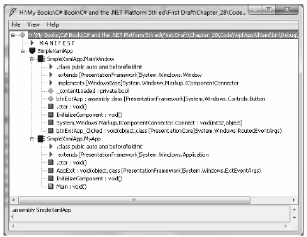

A typical WPF application will not be composed exclusively of code, as you did in this first example. Rather, your C# code files will be paired with a related XAML source file, and together they represent the entirety of a given Window or Application, as well as other class types we have not yet examined such as and Page.
This approach is termed the code file approach to building a WPF application, and you will make use of this technique extensively throughout the remainder of the books WPF coverage. However, before you do, the next example will illustrate how to build a WPF application using nothing but XAML files. While this "100% XAML" approach is not recommended, it will help you clearly understand how blobs of markup are transformed into a corresponding C# code base, and ultimately, a .NET assembly.
Note This next example will make use of a number of XAML techniques we have not yet formally examined, so don't sweat the details. You may wish to simply load the solution files into a text editor and follow along; however, don't use Visual Studio 2010 to do so! Some of the markup in this sample contains markup that cannot be displayed in the Visual Studio XAML designers.
In general, XAML files will contain markup that describes the look and feel of the window , while the related C# code files contain the implementation logic. For example, the XAML file for a Window might describe the overall layout system, the controls within that layout system, and specify the names of various event handlers. The related C# file would contain the implementation logic of these event handlers and any custom code required by the application.
Extensible Application Markup Language, or XAML, is an XML-based grammar that allows you to define the state (and, to some extent, the functionality) of a tree of .NET objects through markup. While XAML is frequently used when building UIs with WPF, in reality it can be used to describe any tree of nonabstract .NET types (including your own custom types defined in a custom .NET assembly), provided each supports a default constructor. As you will see, the markup within a *.xaml file is transformed into a full-blown object model.
Because XAML is an XML-based grammar, we gain all the benefits and drawbacks XML affords us. On the plus side, XAML files are very self-describing (as any XML document should be). By and large, each element in an XAML file represents a type name (such as Button, Window, or Application) within a given .NET namespace. Attributes within the scope of an opening element map to properties (Height, Width, etc.) and events (Startup, Click, etc.) of the specified type.
Given the fact that XAML is simply a declarative way to define the state of an object, it is possible to define a WPF widget via markup or procedural code. For example, the following XAML
<!-- Defining a WPF Button in XAML --> <Button Name = "btnClickMe" Height = "40" Width = "100" Content = "Click Me" />
can be represented programmatically as follows:
// Defining the same WPF Button in C# code. Button btnClickMe = new Button(); btnClickMe.Height = 40; btnClickMe.Width = 100; btnClickMe.Content = "Click Me";
On the downside, XAML can be verbose and is (like any XML document) case sensitive, thus complex XAML definitions can result in a good deal of markup. Most developers will not need to manually author a complete XAML description of their WPF applications. Rather, the majority of this task will (thankfully) be relegated to development tools such as Visual Studio 2010, Microsoft Expression Blend, or any number of third-party products. Once the tools generate the basic markup, you can go in and fine-tune the XAML definitions by hand if necessary.
While tools can generate a good deal of XAML on your behalf, it is important for you to understand the basic workings of XAML syntax and how this markup is eventually transformed into a valid .NET assembly. To illustrate XAML in action, in the next example you’ll build a WPF application using nothing more than a pair of *.xaml files.
The first Window-derived class (MainWindow) was defined in C# as a class type that extends the System.Windows.Window base class. This class contains a single Button object that calls a registered event handler when clicked. Defining this same Window type in the grammar of XAML can be achieved as so (assume this markup has been defined in a file named MainWindow.xaml):
<!-- Here is your Window definition --> <Window x:Class="SimpleXamlApp.MainWindow" xmlns="http://schemas.microsoft.com/winfx/2006/xaml/presentation" xmlns:x="http://schemas.microsoft.com/winfx/2006/xaml" Title="A Window built using 100% XAML" Height="200" Width="300" WindowStartupLocation ="CenterScreen"> <!--This window has a single button as content --> <Button x:Name="btnExitApp" Width="133" Height="24" Content = "Close Window" Click ="btnExitApp_Clicked"/> <!--The implementation of your button's Click event handler! --> <x:Code> <![CDATA[ private void btnExitApp_Clicked(object sender, RoutedEventArgs e) { this.Close(); } ]]> </x:Code> </Window>
First of all, notice that the root element <Window> makes use of the Class attribute, which is used to specify the name of the C# class that will be generated when this XAML file is processed. Also notice that the Class attribute is prefixed with the x: tag prefix. If you look within the opening <Window> element, you'll see that this XML tag prefix is assigned to the string "http://schemas.microsoft.com/winfx/2006/xaml" to build an XML namespace declaration. You will understand the details of these XML namespace definitions a bit later in the chapter, but for now, just be aware that any time you want to make reference to an item defined by the "http://schemas.microsoft.com/winfx/2006/xaml" XAML namespace, you must prefix the x: token.
Within the scope of the <Window> start tag, you have specified values for the Title, Height, Width, and WindowsStartupLocation attributes, which are a direct mapping to properties of the same name supported by the System.Windows.Window class in the PresentationFramework.dll assembly.
Next up, notice that within the scope of the window’s definition, you have authored markup to describe the look and feel of a Button object that will be used to implicitly set the Content property of the window. Beyond setting up the variable name (using the x:Name XAML token) and its overall dimensions, you have also handled the Click event of the Button type by assigning the method to delegate to when the Click event occurs.
The final aspect of this XAML file is the <x:Code> element, which allows you to author event handlers and other methods of this class directly within an *.xaml file. As a safety measure, the code itself is wrapped within a CDATA scope to prevent XML parsers from attempting to directly interpret the data (although this is not strictly required for the current example).
It is important to point out that authoring functionality within a <Code> element is not recommended. Although this “single-file approach” isolates all the action to one location, inline code does not provide a clear separation of concerns between UI markup and programming logic. In most WPF applications, implementation code will be found within a related C# file (which you will do eventually).
Remember that XAML can be used to define in markup any nonabstract .NET class that supports a default constructor. Given this, you could most certainly define your application object in markup as well. Consider the following content within a new file, MyApp.xaml:
<!-- The Main() method seems to be missing! However, the StartupUri attribute is the functional equivalent --> <Application x:Class="SimpleXamlApp.MyApp" xmlns="http://schemas.microsoft.com/winfx/2006/xaml/presentation" xmlns:x="http://schemas.microsoft.com/winfx/2006/xaml" StartupUri="MainWindow.xaml"> </Application>
Here, you might agree, the mapping between the Application-derived C# class type and its XAML description is not as clear-cut as was the case for our MainWindow’s XAML definition. Specifically, there does not seem to be any trace of a Main() method. Given that any .NET executable must have a program entry point, you are correct to assume it is generated at compile time, based in part on the StartupUrl property. The value assigned to StartupUrl represents which XAML resource to display when the application starts up.
Although the Main() method is automatically created at compile time, you are free to use the <x:Code> element to capture other C# code blocks. For example, if you wanted to display a message when your program shuts down, you could handle the Exit event and implement it as so:
<Application x:Class="SimpleXamlApp.MyApp" xmlns="http://schemas.microsoft.com/winfx/2006/xaml/presentation" xmlns:x="http://schemas.microsoft.com/winfx/2006/xaml" StartupUri="MainWindow.xaml" Exit ="AppExit"> <x:Code> <![CDATA[ private void AppExit(object sender, ExitEventArgs e) { MessageBox.Show("App has exited"); } ]]> </x:Code> </Application>
At this point, you are ready to transform our markup into a valid .NET assembly. However, you cannot directly use the C# compiler to do so! To date, the C# compiler does not have a native understanding of XAML markup. However, the msbuild.exe command-line utility does understand how to transform XAML into C# code and compile this code on the fly when it is informed of the correct *.targets files.
Msbuild.exe is a tool that will compile .NET code based on the instructions contained within an XML based build script. As it turns out, these build script files contain the exact same sort of data that is found in the *.csproj file generated by Visual Studio! Therefore, it is possible to compile a .NET program at the command-line using msbuild.exe or using Visual Studio 2010 itself.
Note A full examination of the msbuild.exe utility is beyond the scope of this chapter. If you’d like to learn more, perform a search for the topic “MSBuild” in the .NET Framework 4.0 SDK documentation.
Here is a very simple build script, SimpleXamlApp.csproj, which contains just enough information to inform msbuild.exe how to transform your XAML files into a related C# code base:
<Project DefaultTargets="Build" xmlns="http://schemas.microsoft.com/developer/msbuild/2003"> <PropertyGroup> <RootNamespace>SimpleXamlApp</RootNamespace> <AssemblyName>SimpleXamlApp</AssemblyName> <OutputType>winexe</OutputType> </PropertyGroup> <ItemGroup> <Reference Include="System" /> <Reference Include="WindowsBase" /> <Reference Include="PresentationCore" /> <Reference Include="PresentationFramework" /> </ItemGroup> <ItemGroup> <ApplicationDefinition Include="MyApp.xaml" /> <Page Include="MainWindow.xaml" /> </ItemGroup> <Import Project="$(MSBuildBinPath)\Microsoft.CSharp.targets" /> <Import Project="$(MSBuildBinPath)\Microsoft.WinFX.targets" /> </Project>
Note This *.csproj file cannot be loaded directly into Visual Studio 2010, as it only contains the minimal instructions necessary to build our application at the command line.
The <PropertyGroup> element is used to specify some basic aspects of the build, such as the root namespace, the name of the resulting assembly, and the output type (the equivalent of the /target:winexe option of csc.exe).
The first <ItemGroup> specifies the set of external assemblies to reference with the current build, which, as you can see, are the core WPF assemblies examined earlier in this chapter.
The second <ItemGroup> is much more interesting. Notice that the <ApplicationDefinition> element’s Include attribute is assigned to the *.xaml file that defines our application object. The <Page>’s Include attribute can be used to list each of the remaining *.xaml files that define the windows (and pages, which are often used when building XAML browser applications) processed by the application object.
However, the "magic" of this build script is the final <Import> elements. Here, you are referencing two *.targets files, each of which contains numerous other instructions used during the build process. The Microsoft.WinFX.targets file contains the necessary build settings to transform the XAML definitions into equivalent C# code files, while Microsoft.CSharp.Targets contains data to interact with the C# compiler itself.
In any case, at this point you can use a Visual Studio 2010 Command Prompt to process your XAML data with msbuild.exe. To do so, change to the directory containing your MainWindow.xaml, MyApp.xaml and SimpleXamlApp.csproj files, and enter the following command:
msbuild SimpleXamlApp.csproj
Once the build process has completed, you will find that your working directory now contains a \bin and \obj subdirectory (just like a Visual Studio project). If you were to open the \bin\Debug folder, sure enough, you will find a new .NET assembly named SimpleXamlApp.exe. If you open this assembly into ildasm.exe, you can see that (somehow) your XAML has been transformed into a valid executable application (see Figure 27-9).
Figure 27-9 Transforming XAML markup into a .NET assembly? Interesting . . .
And if you run your program by double clicking on the executable, you will see your main window launch on the screen.